This is the Lolita oufit style that I really love. I was drawn to the soft colors, layered skirt, and simple details that gave the outfit a graceful and elegant charm. The combination of the blouse, skirt, and accessories created a cohesive look that I find both elegant and cute.
Such aesthetics inspires me in terms of...
Fashion styles or outfits
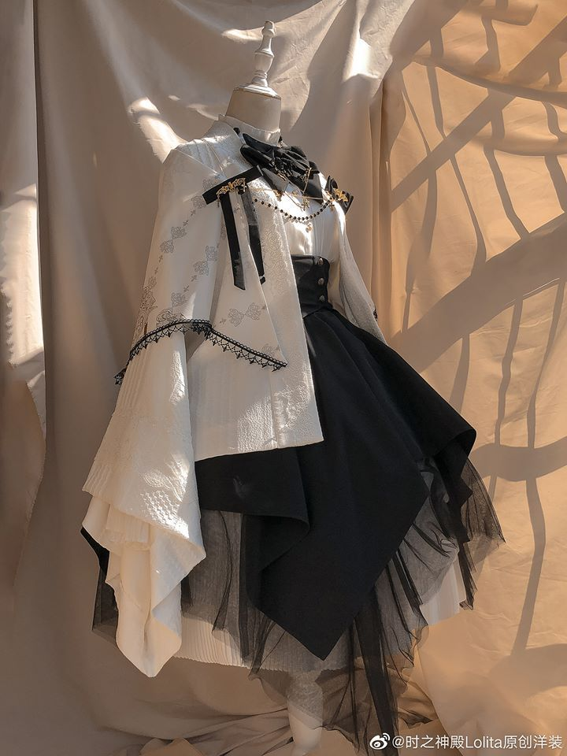
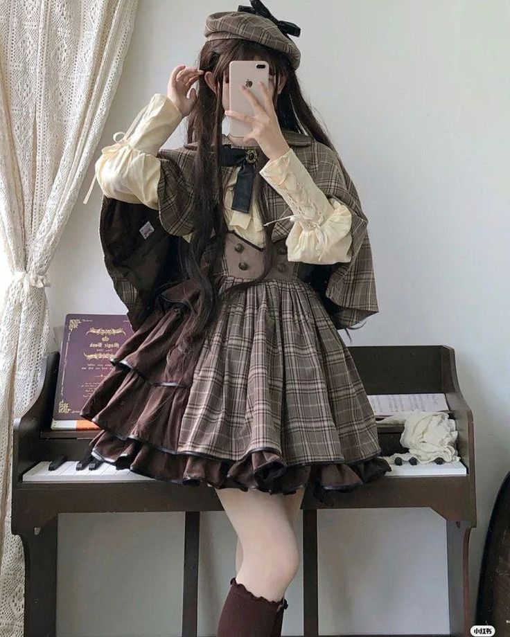
The attention to detail in the design, added to the overall appeal of the outfit. It was a style that made me feel like I was stepping into a fairytale world, and I was captivated by its unique blend of vintage and fantasy like details.
Room setups or interior designs
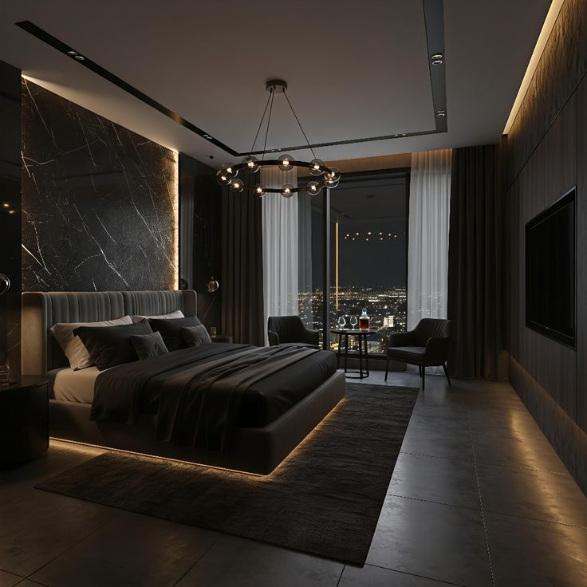
The dark aesthetic design of the room really caught my eye because of how calm and cozy it feels like. The dark colors, dim lighting, and simple decorations all work together to give the room a cool and relaxing vibe.
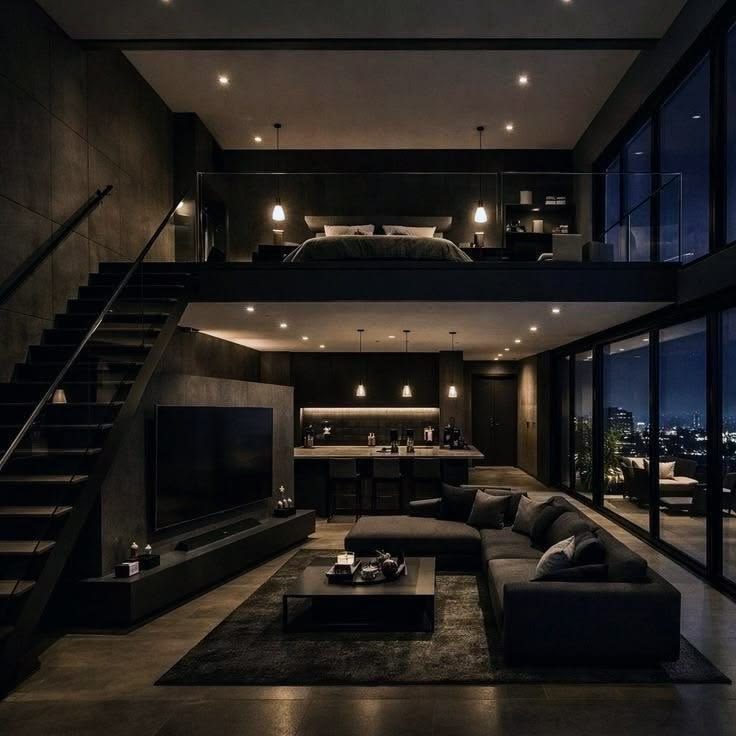
For others, the dark color may seems unfit for these types of designs but this design really makes me feel at ease. It is very aesthetically pleasing to the eye simple yet elegant design makes me feel more at home.
Food presentation
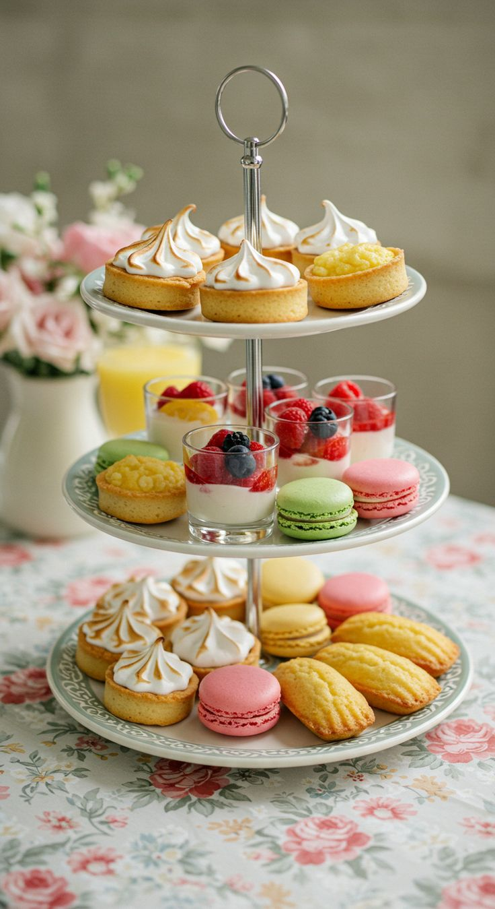
The dessert presentation immediately caught my attention because of how elegant and satisfying it looked. It's giving a classy appearance without looking too complicated. I also liked how the arrangement made the food feel more special and carefully prepared, which made the whole presentation more appealing to me.
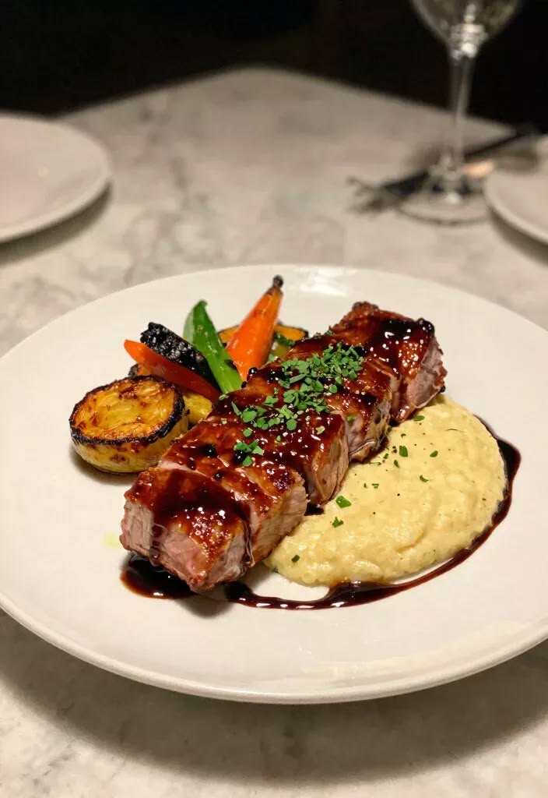
The way the food was arranged made it look neat, balanced, and easy to appreciate before even taking a bite. Seeing a beautifully prepared plate like that made me realize how presentation can make food feel more enjoyable and delicious.
Posters, album covers, or artwork
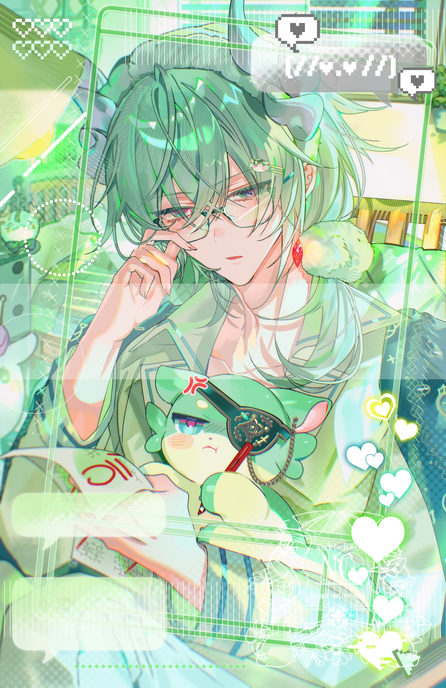
As you can see, it is clearly apparent that I love anime art and these particular srt styles made me love it even more. These style of artwork uses "hyperlighting" which makes the visuals look more pleasing
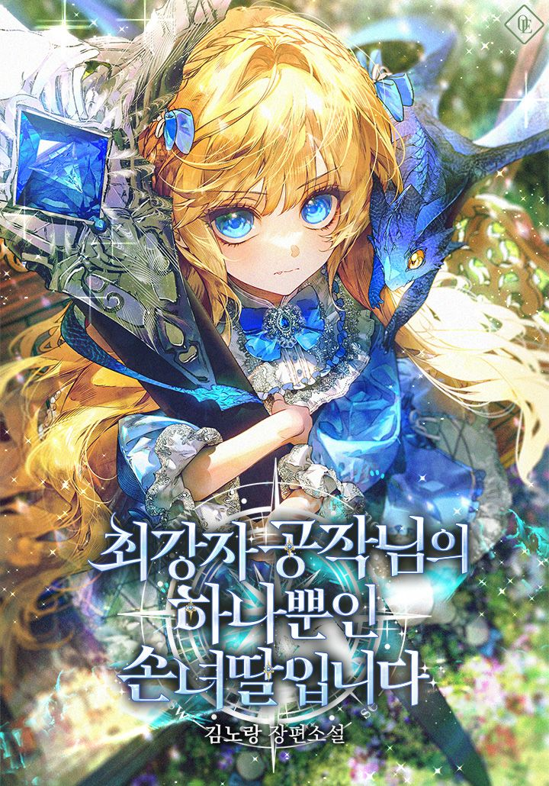
Even applying these to covers of specific literature, it makes it more visually appealing and engaging. You can see the love and effort that was poured through the artworks
Nature scenes or landscapes
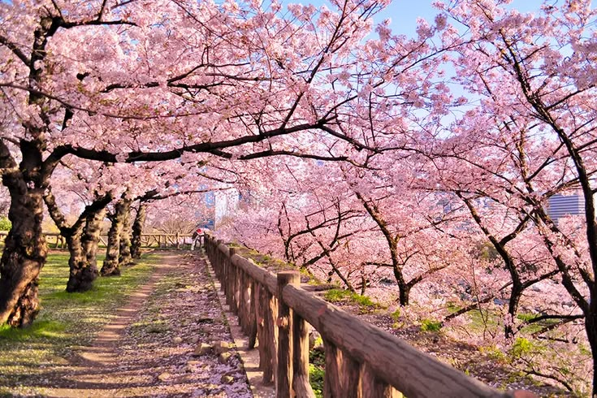
I particularly love the serene beauty of nature scenes especially the Sakura fields. The way the light passes through the trees makes me feel at ease. It may not be a green scenery but I love the athmosphere it gives.
Other that that, I love the sunset view wherever I go but, nothing beats the beuty of it when it reches the horizon of the sea. It is the most breath-taking view I have ever seen.
Product packaging
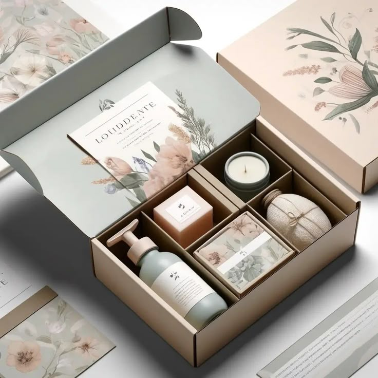
One of the best things I love that makes everything look pleasing is the arrangement of items. Arranging the products in a beautiful package makes them more appealing to customers. Even I am tempted to buy them just to look at the packaging.
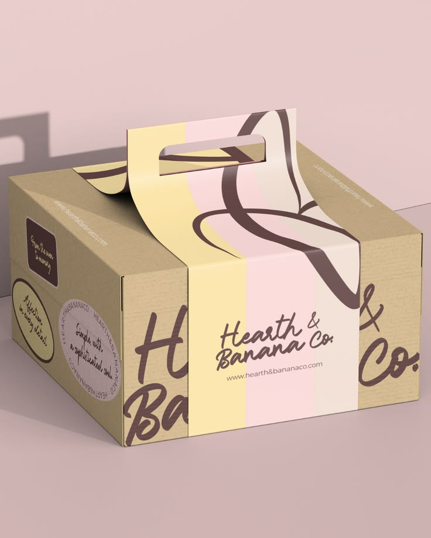
Aside from that, I love the idea of the products being placed in a well designed package bag that is well crafted to match the aesthetics of the product and the company. Aside from the visual appeal, the packaging is easy to carry around.
Sports Visual or Gear
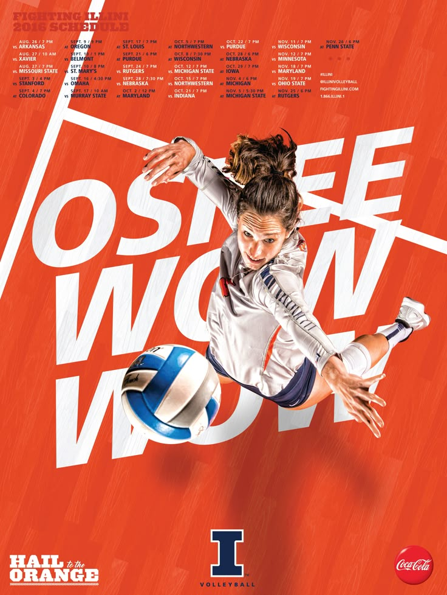
The sports visual design immediately caught my attention because of how energetic and exciting it looked. Seeing the model in action made the whole design feel more alive and powerful instead of just being a simple photo. The movement, pose, and overall styling worked really well together, making the visual more appealing and fun to look at.
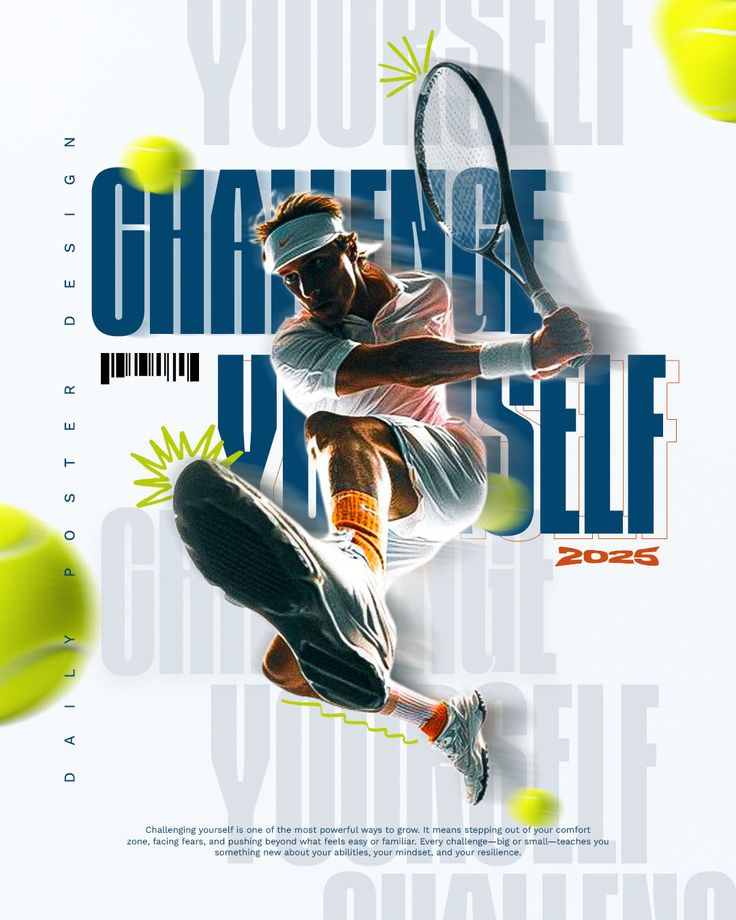
What I like most about this kind of design is how it captures both strength and confidence of the players. The action of the model made the image feel dynamic and full of energy, which helped highlight the sporty aesthetic even more. It made the design more inspiring because it showed how sports visuals can look both active and stylish at the same time.
Social Media Layouts
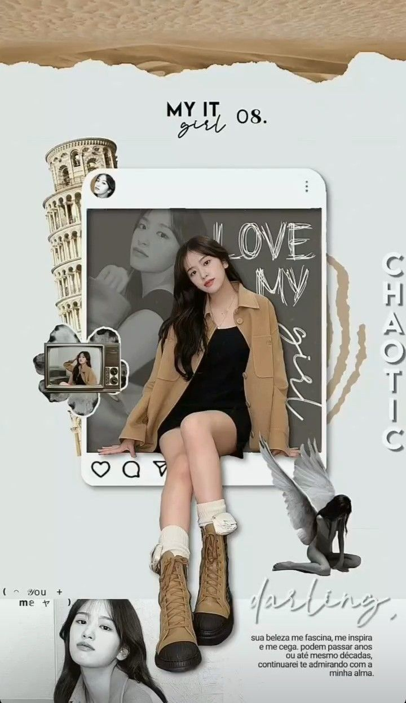
The Instagram-style social media layout immediately caught my attention because of how clean and visually pleasing it looked. I liked how the colors, photos, and spacing all matched well together, making the whole feed feel organized and easy to look through. Even with simple elements, the design still looked modern and creative..
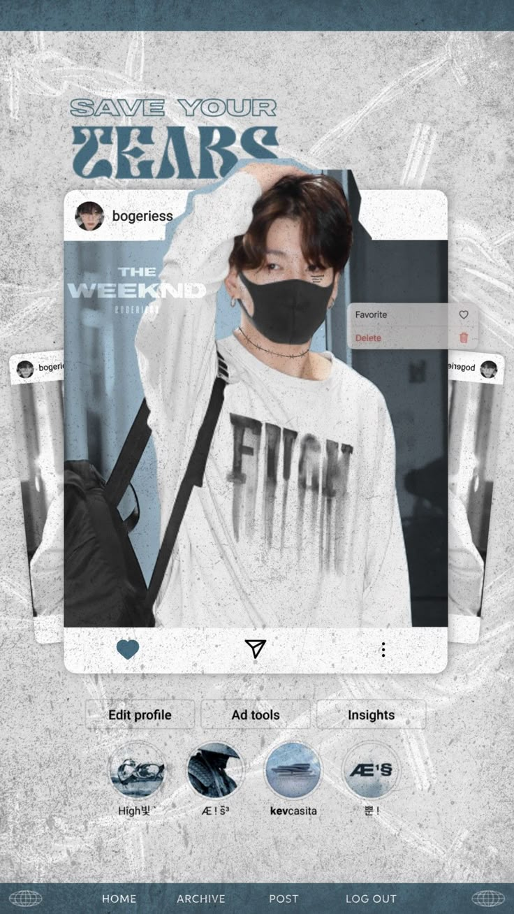
What I admire most about this kind of layout is how it makes content look more attractive and professional without feeling too complicated. The balanced arrangement of posts gives the page a smooth and consistent appearance, which makes people more interested in viewing the content. Seeing this style made me appreciate how good design can make social media feel more engaging and visually satisfying.